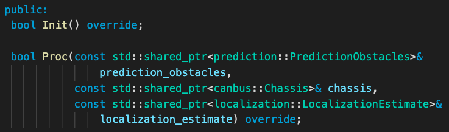

Planning Component Introduction
Introduction
This article describes the architecture of planning module. It mainly consists of the following parts:
Cyber component related knowledge
How the messages are received and sent
How the trajectory is arranged and made up
Where is the code
Please refer to code.
Code Reading
How the messages are received and sent

Input Messages are partially input from readers, which are defined in PlanningComponent::Init(). For Planning component, readers receive message types of RoutingResponse/TrafficLightDetection/PadMessage/Stories/MapMsg and store them in local for processing afterward. Another part of input messages are defined in PlanningComponent::Proc(), where the planning process is called when new messages arrives.
Process. PlanningComponent::Proc() function works like Reader’s callback function. Each time there are new messages of prediction::PredictionObstacles/canbus::Chassis/localization::LocalizationEstimate, this process is implemented till the end of this function.
Output. PlanningComponent output the message by the following line
planning_writer_->Write(adc_trajectory_pb), in which the writer send the final adc_trajectory_pb message to the cyber system. The writer is initialized in PlanningComponent::Init(), just after the readers are initialized.
How the trajectory as planning component output is produced
Now we know how messages are input to and output from the planning component. The work of planning module is basically processing the input messages and producing an appropriate trajectory for the ADC. The final goal of this is to ensure safety, comfort and passability. And different algorithms are explored in Apollo in order to achieve or get closer to this goal.
The basic and more mature algorithm is rule-based planning, where we use a two-layer state machine to manage the path in different scenarios. For details, please refer scenarios.
The learning based algorithms including Hybrid Mode are under exploration, which can be enabled in planning_config. The E2E mode outputs a planning trajectory when inputting a birdview image centered by the vehicle pose and current velocity. Note E2E methods are not tested on road, while it’s encouraged to do experiments in simulation for research purposes.